Rakip görselleri yalnızca resmi kaynaklardan (App Store listeleri, resmi web siteleri) alınmıştır; hiçbiri çizilmemiş veya yeniden üretilmemiştir. Görseller bu dosyayla aynı klasörde bulunan alkaros-rakip_*.webp dosyalarından yüklenir. Tarih: 19 Eylül 2026.
Önemli sınırlar. (1) ALKAROS için gerçek ekran görüntüsü bu oturumda yoktur; kod deposu bağlı değil. Sol sütundaki kutular, sizden gelecek gerçek görüntüler için ayrılmıştır ve ALKAROS notları yalnızca sizin verdiğiniz kod bulgularına dayanır. (2) Adisyo'nun kendi sitesi otomatik erişime kapalı olduğu için (robots.txt) Adisyo yalnızca App Store görselleriyle yer alır. (3) Bulunamayan ekranlar ilgili bölümde açıkça belirtilmiştir. (4) Rakiplerin ekran görüntüleri pazarlama görselleridir; gerçek canlı veriyi ve hata durumlarını yansıtmayabilir.
1. Kasiyer / sipariş alma ekranı
ALKAROS CashierGerçek ekran görüntüsü bekleniyor: sol katalog grid + sağ adisyon paneli
Adisyo – ürün ekleme (Masa 6, iPhone, Türkçe) https://apps.apple.com/tr/app/adisyo-cafe-restoran-pos/id6471924118
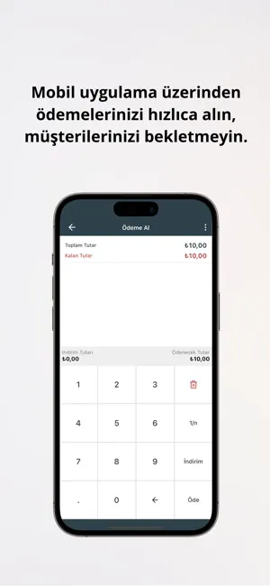
Adisyo – ödeme al (sayısal tuş takımı) https://apps.apple.com/tr/app/adisyo-cafe-restoran-pos/id6471924118
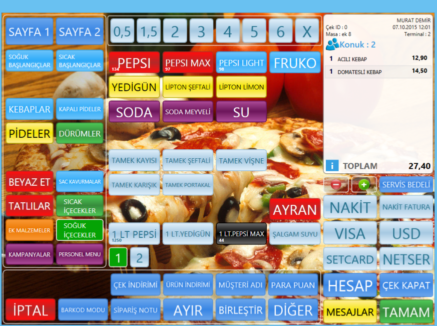
RobotPOS – sipariş giriş ekranı (Türkçe) https://www.robotpos.com/urunler/yazilim-urunleri/satis-noktasi-pos (site içinde küçük önizleme olarak doğrulandı)
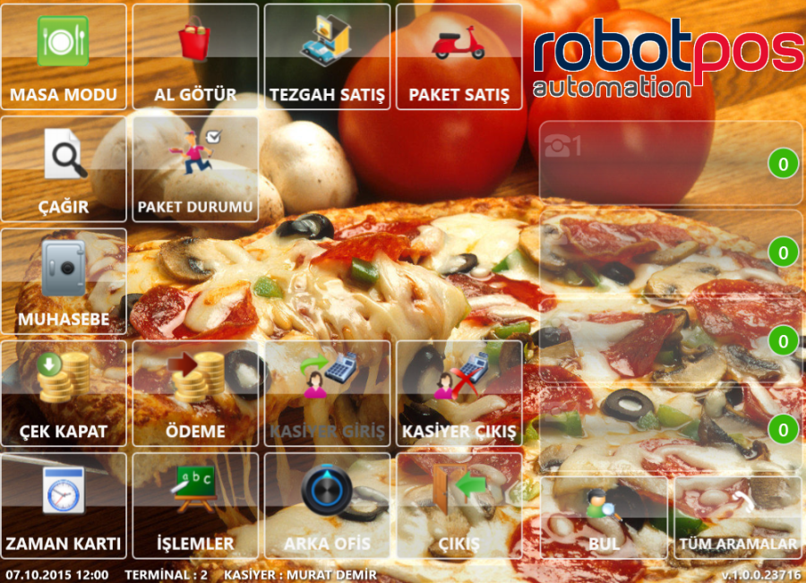
RobotPOS – ana menü (Masa Modu, Al Götür, Paket Satış…) https://www.robotpos.com/images/pos-screen/pos01.webp (ekranın altında 07.10.2015 tarihi ve v1.0.0.23716 görünüyor)
Kıyas: Foodics kasiyer ekranı sol adisyon, sağ kategori kutuları düzenini çok az renkle (tek mor vurgu) kuruyor; kategorilerde görsel yokken yer tutucu ikon gösteriyor, ürün görseli olmayan bir katalog için makul bir boş durum çözümü. ALKAROS Cashier aynı iki bölmeli düzeni kullanıyor, ancak sistem yazı tipi kalması (Inter yüklenmemiş) ve rakamlar için DM Mono'nun kasada hâlâ devreye girmemesi, Foodics'in tutarlı tipografisine göre marka olarak geride kalıyor. RobotPOS ekranı fotoğraf arka planı üzerine yarı saydam kutular koyuyor; okunabilirlik zayıf ve görüntü 2015 tarihli, yani ALKAROS'un temiz canvas/surface ayrımı burada açık ara önde. Adisyo'nun mobil ödeme ekranındaki büyük tuş takımı, dokunma hedefi açısından ALKAROS'un kasa paneli için iyi bir referans.
2. Mutfak ekranı (KDS)
ALKAROS PosTerminal – Mutfak OperasyonlarıGerçek ekran görüntüsü bekleniyor: Bekliyor / Hazırlanıyor / Hazır / Servis edildi kolonları, yaş rozetleri
Kıyas: Foodics KDS her sütun başlığını tek bir düz renkle (kırmızı gecikmiş, yeşil yeni, mavi değişmiş) kodluyor ve her sütunun altına tam genişlikte "Bump" düğmesi koyuyor; durumu ve eylemi bir bakışta ayırt ettiriyor. Simpra koyu zeminde kart başına sipariş numarası, kurye/masa sayısı, garson ve müşteri bilgisi ile daha yoğun; Türkçe etiketler yerinde ama küçük punto. ALKAROS'un dört kolonlu akışı (servis edildi dahil) iki rakipten daha eksiksiz bir yaşam döngüsü sunuyor; yaş rozetleri gecikme vurgusu için Foodics'in "Delayed" başlığından daha ince bilgi taşıyor, ancak kritik durumun kolon başlığı düzeyinde renklenip renklenmediğini ve büyük dokunma düğmesi olup olmadığını gerçek ekranla doğrulamak gerekir. Adisyo ve RobotPOS için resmi kaynaklarda KDS görseli bulunamadı.
3. Garson / saha personeli mobil ekranı
ALKAROS WaiterPwaGerçek ekran görüntüsü bekleniyor: masa durumu kartları + alt dock navigasyon
Kıyas: Adisyo tamamen Türkçe ve iki sütunlu masa kartlarıyla tek elle kullanılabilir; ancak alt sekme etiketleri ve masa başlıkları çok küçük punto, kart renklerinin anlamı ekranda açıklanmıyor. Adisyo'nun "Hızlı işlemler" alt sayfası (Öde, Masayı Değiştir, Masayı Birleştir, Adisyon Aktar) garson akışı için somut bir eksik-listesi sağlıyor; WaiterPwa'da bu işlemlerin bir dokunuşta erişilebilir olup olmadığı kontrol edilmeli. Simpra'nın App Store görselleri Türkiye mağazasında İngilizce ("Foods", "Out of Stock"); ALKAROS'un "her metin Türkçe" kuralı burada gerçek bir farklılaşma noktası. Foodics ve RobotPOS için resmi kaynaklarda garson mobil görseli bulunamadı.
4. Masa / oturma planı
ALKAROS WaiterPwa – masa durumu kartlarıBoş / Dolu / Rezerve / Toplanıyor / Servis dışı. Gerçek ekran görüntüsü bekleniyor
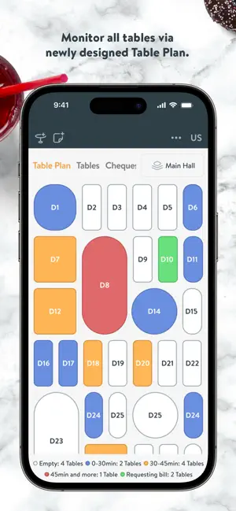
Simpra POS – Table Plan (yuvarlak/oval masalar, süreye göre renk ve alt lejant) https://apps.apple.com/tr/app/id1356460037Adisyo – Salon masaları (liste kartları, tutar gösterimi) https://apps.apple.com/tr/app/adisyo-cafe-restoran-pos/id6471924118
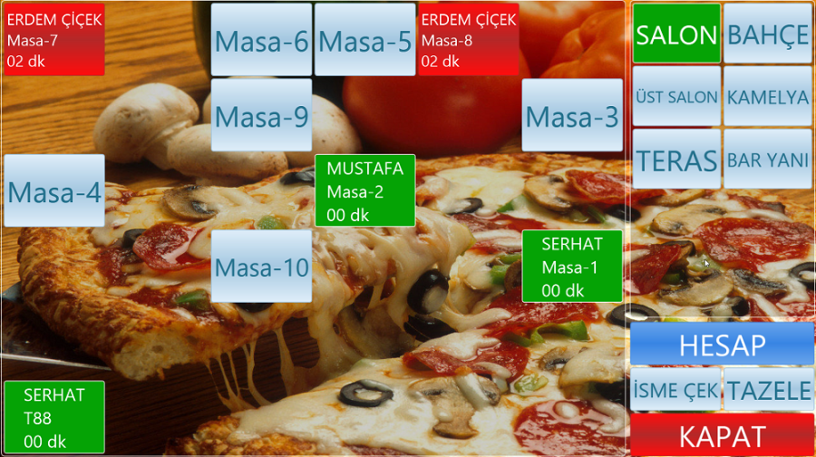
RobotPOS – masa planı (Salon, Bahçe, Teras sekmeleri; açık masada müşteri adı ve "02 dk") https://www.robotpos.com/urunler/yazilim-urunleri/satis-noktasi-pos
Kıyas: Simpra masa planı fiziksel yerleşimi (yuvarlak ve oval masalar) yansıtıyor ve renkleri geçen süreye bağlıyor (0-30 dk, 30-45 dk, 45+ dk, hesap isteyen), alt lejantla açıklıyor; bu, ALKAROS'un statü tabanlı (Boş/Dolu/Rezerve…) kartlarından farklı olarak zaman baskısını gösteriyor. Adisyo yerleşim değil, düz kart listesi kullanıyor: hızlı ama mekânı temsil etmiyor. RobotPOS masalarda müşteri adı ve geçen dakika gösteriyor, salon sekmeleri net; görsel dil ise eski. ALKAROS'un beş durumlu renk sistemi net bir avantaj olabilir, fakat masada geçen süre ve lejant olup olmadığı gerçek ekranla teyit edilmeli.
Bu bölümde rakip görseli yok. Simpra'nın site sayfası (https://simprasuite.com/restaurant-software/qr-menu/) yalnızca çizim niteliğinde SVG'ler içeriyor; bunları gerçek ekran görüntüsü olarak doğrulayamadım ve kullanmadım. Adisyo, Foodics ve RobotPOS için de sayfa görselleri açıkça QR sipariş arayüzü göstermiyordu. Karşılaştırma için rakiplerin canlı demo QR menülerinden sizin alacağınız ekran görüntüleri gerekir.
Ek rakipler (2. tur)
Yerli: Menulux. Global: Lightspeed, Square, Loyverse. Bu turda ilk turda boş kalan garson mobil, KDS ve müşteri ekranı alanları hedeflendi. Ekranlar yine yalnızca resmi App Store listelerinden alındı.
Bu turda kullanılamayanlar: Toast, Denge Smart, KarekodGarson ve Menulux'un kendi web sitesi. Bu sitelerde doğrulanabilir gerçek arayüz ekran görüntüsü çıkmadı (Toast görselleri alt metinsiz pazarlama grafikleri, KarekodGarson arayüzü resim değil HTML çizim, Menulux sayfasında ekran görüntüsü yok). Bunları eklemedim.
Garson mobil ve masa planı
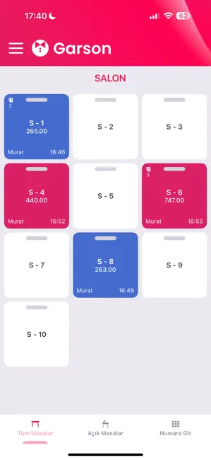
Menulux Garson – Salon masaları (iPhone, Türkçe) https://apps.apple.com/tr/app/menulux-garson/id6742921152
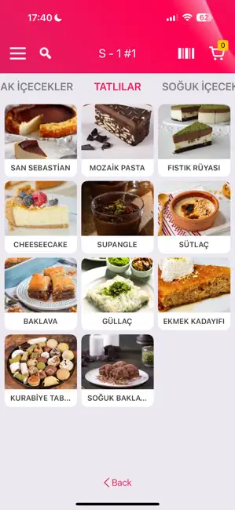
Menulux Garson – fotoğraflı ürün ızgarası https://apps.apple.com/tr/app/menulux-garson/id6742921152
Lightspeed Restaurant (L) – Dining Room kat planı (iPhone, İngilizce) https://apps.apple.com/tr/app/lightspeed-restaurant-pos-l/id474723658
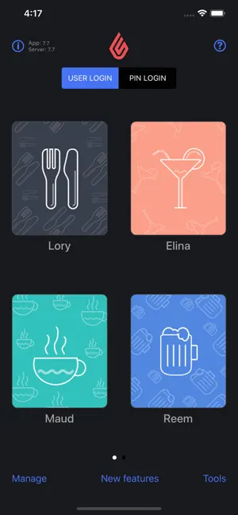
Lightspeed – bölünmüş adisyon ve ödeme yöntemleri, "Finalize" https://apps.apple.com/tr/app/lightspeed-restaurant-pos-l/id474723658
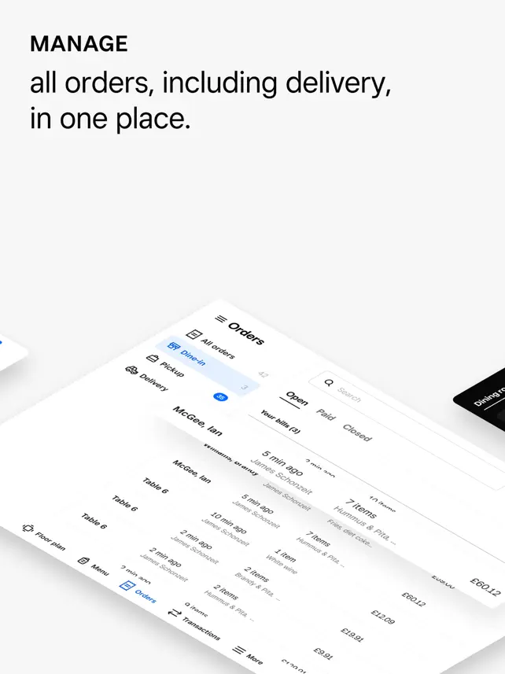
Square Restaurants – Orders ve kat planı (eğik pazarlama kompozisyonu, İngilizce) https://apps.apple.com/gb/app/square-restaurants-pos/id1346862885
Kıyas: Menulux Garson, ALKAROS'un hedefine en yakın yerli rakip: tamamen Türkçe, masa kartında tutar, garson adı ve açılış saati birlikte görünüyor ve alt sekmeler (Tüm Masalar, Açık Masalar, Numara Gir) garsonun iki ana görevini ayırıyor. Zayıf yanları: ürün ekranındaki "Back" düğmesi İngilizce kalmış (yerelleştirme sızıntısı), kategori sekmeleri kenarda kesiliyor. Lightspeed ve Square kat planı çizimi masayı fiziksel yerleşimle gösteriyor; Square ayrıca her masada geçen süreyi ve durumu renkle veriyor, koyu tema kullanıyor ve küçük punto kullanıyor. Lightspeed'in adisyon ekranı "Combine" ve bölünmüş adisyon işlemlerini tek ekranda toplarken ödeme yöntemleri ve kırmızı "Finalize" düğmesi büyük dokunma hedefi sağlıyor. WaiterPwa'nın beş durumlu kart sistemi bunlardan daha okunur bir renk anlamı sunabilir, ama garsonun sepet, adisyon bölme ve birleştirme akışları gerçek ekranla karşılaştırılmalı.
Mutfak ekranı (KDS)
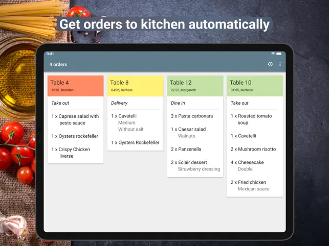
Loyverse KDS (iPad, İngilizce): başlık rengi bekleme süresine göre kırmızı / sarı / yeşil https://apps.apple.com/tr/app/loyverse-kds-kitchen-display/id1218352383
Kıyas: Loyverse her sipariş kartının başlığını bekleme süresine göre renklendiriyor (kırmızı, sarı, yeşil) ve sipariş tipini (Take out, Delivery, Dine in) italik ikinci satırda veriyor; uyarı süresi ayrı bir ayar ekranında saniye cinsinden ayarlanabiliyor. Bu, ALKAROS'un "yaş rozeti" yaklaşımına karşı somut bir alternatif: rozet küçük bir ipucu, başlık rengi ise uzaktan okunur. ALKAROS KDS'nin yaş rozetinin renk eşiklerini yapılandırmaya izin verip vermediği ve masadan uzakta okunabilirliği gerçek ekranla test edilmeli.
Müşteriye açık menü / sipariş
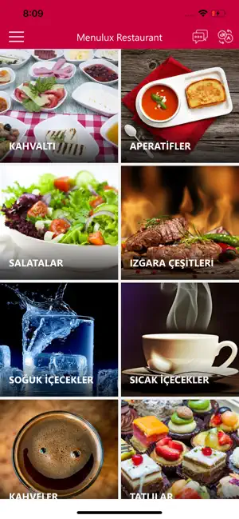
Menulux Tablet Menu – müşteri menüsü (Türkçe, tam kadraj fotoğraflı kategori kutuları) https://apps.apple.com/in/app/menulux-tablet-menu/id1139222076
Lightspeed Self-Order – Current Bill (−/+ adet düğmeleri, toplam) https://apps.apple.com/tr/app/id1134460904
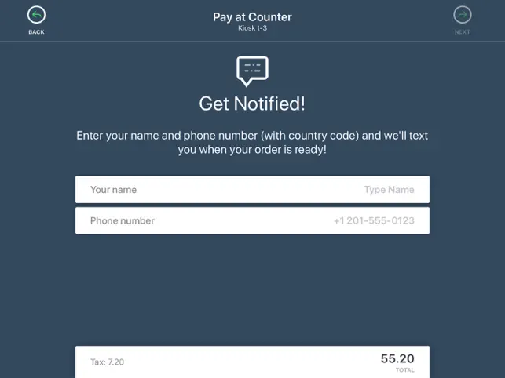
Lightspeed Self-Order – "Get Notified" (ad ve telefon ile SMS bildirimi) https://apps.apple.com/tr/app/id1134460904
Kıyas: İki ürün de QR/web değil, tablet veya kiosk uygulaması; CustomerWeb ile birebir aynı kanal değil, bu yüzden yalnızca arayüz düzeni karşılaştırılabilir. Menulux menüsü Türkçe ve fotoğraf ağırlıklı; kategori kutuları tam kadraj, ürün bilgisi ve fiyat bu ilk ekranda yok. Lightspeed kiosk, sol kategori rayı, fiyat rozetli fotoğraf kutuları ve ürün üzerinde seçili adedi gösteren yeşil sayaçla hızlı sipariş akışı kuruyor; adisyon ekranı ve sipariş hazır olunca SMS bildirimi akışı da tam. CustomerWeb'in amber teması ve mobil öncelikli yapısı bunlardan ayrışıyor ama sistem yazı tipi ve Menü/Sepet/Adisyon ayrımı gerçek ekran görüntüsüyle kıyaslanmalı.
Bulgular tablosu
Alan
Rakip (görülen kanıta göre)
ALKAROS durumu (sizin kod bulgularınıza göre)
Görsel dil / marka tutarlılığı
Foodics tek vurgu rengi ve tutarlı tipografi; RobotPOS 2015 tarihli, fotoğraf arka planlı, dağınık
Palet güçlü, ama Cashier'da system-ui ve CustomerWeb'de ayrı amber tema tutarlılığı zayıflatıyor
Bilgi yoğunluğu / okunabilirlik
Foodics KDS sütun başlığı renk kodu ve tam genişlik Bump düğmesi; Simpra KDS daha yoğun ama küçük punto
Dört kolon ve yaş rozeti iyi; kritik durum vurgusu gerçek ekranla doğrulanmalı
Dokunma hedefi / mobil ergonomi
Adisyo ödeme tuş takımı büyük; ama sekme etiketleri ve masa yazıları çok küçük
WaiterPwa alt dock var; hedef boyutları ölçülmedi
Yerelleştirme
Adisyo ve RobotPOS tam Türkçe; Simpra App Store'da İngilizce, KDS'de Türkçe; Foodics İngilizce
Tüm arayüz Türkçe: net avantaj (enum sızıntısı ayrıca test edilmeli)
Hata / boş durum
Foodics kategori yer tutucu ikonları; başka hata durumu görseli bulunamadı
Bilinmiyor; gerçek ekran gerekli
Erişilebilirlik
RobotPOS'ta fotoğraf üzeri metin düşük kontrast; diğerlerinde odak durumu görselden anlaşılmıyor
Palet kontrastı ölçülmedi
Masa planı
Simpra: yerleşim + süre bazlı renk + lejant en zengin
Statü kartları var; zaman ve yerleşim bilgisi doğrulanmalı
Müşteri QR / menü ekranı
Lightspeed kiosk akışı eksiksiz (menü, adisyon, bildirim); Menulux Türkçe fotoğraflı menü. İkisi de QR değil
CustomerWeb kanal olarak farklı; görsel kıyas için gerçek ekran gerekli
KDS (2. tur)
Loyverse: bekleme süresine göre renkli başlık, sipariş tipi etiketi, ayarlanabilir uyarı süresi
Yaş rozeti var; eşik ve başlık rengi doğrulanmalı
Garson mobil (2. tur)
Menulux Garson tam Türkçe ama "Back" sızıntısı var; Lightspeed adisyon bölme/birleştirme güçlü; Square masada süre gösteriyor
WaiterPwa Türkçe ve durum kartları güçlü; adisyon bölme/birleştirme akışı doğrulanmalı